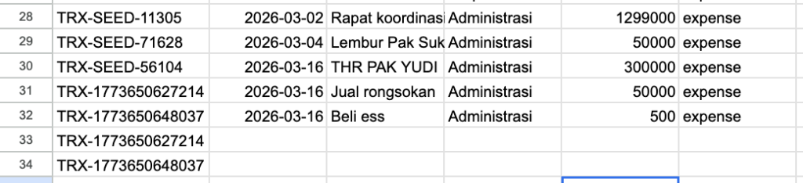

Laporan Evidence CAPEX
Pelaporan Pekerjaan CAPEX 2026
Dokumentasi visual Before, Process, dan After untuk seluruh pekerjaan CAPEX IT, Laboratorium, dan Sarana Prasarana.

Dokumentasi visual Before, Process, dan After untuk seluruh pekerjaan CAPEX IT, Laboratorium, dan Sarana Prasarana.

Menunjukkan masalah, urgensi, titik lokasi, dan dampak sebelum pekerjaan dimulai.
Merekam aktivitas pelaksanaan, pengawasan, material, vendor, dan progres lapangan.
Membuktikan output pekerjaan, manfaat operasional, dan kesiapan serah-terima.
Setiap halaman pekerjaan sudah disiapkan dengan tiga bingkai evidence. Kaur cukup menempel foto lapangan dan menyesuaikan caption singkat.
Total 17 pekerjaan CAPEX diurutkan berdasarkan progres tertinggi, dari pekerjaan selesai sampai pekerjaan yang masih perlu akselerasi.
Judul, owner, dan progres mengikuti data Progres_CAPEX terakhir yang ditarik dari dashboard.
Deskripsi: Meliputi penutupan lapisan membran dengan talang baru. Fokus laporan: kondisi awal, tahapan pekerjaan, dan hasil akhir sesuai kebutuhan proyek.
Deskripsi: Pelapisan bagian atas cor dengan lapisan baru dan anti bocor. Fokus laporan: kondisi awal, tahapan pekerjaan, dan hasil akhir sesuai kebutuhan proyek.
Deskripsi: Pengacatan dinding bagian samping dan depan 10 ruang kelas lantai 1. Fokus laporan: kondisi awal, tahapan pekerjaan, dan hasil akhir sesuai kebutuhan proyek.
Deskripsi: ruang bersama K3. Fokus laporan: kondisi awal, tahapan pekerjaan, dan hasil akhir sesuai kebutuhan proyek.
Deskripsi: Lantai granit 60x60. Fokus laporan: kondisi awal, tahapan pekerjaan, dan hasil akhir sesuai kebutuhan proyek.
Deskripsi: Pengecoran ulang lapisan beton lapangan. Fokus laporan: kondisi awal, tahapan pekerjaan, dan hasil akhir sesuai kebutuhan proyek.
Deskripsi: Pembangunan Lantai 3 secara keseluruhan untuk mencapai target ruang kelas international tahun ajaran 2026/2027. Fokus laporan: kondisi awal, tahapan pekerjaan, dan hasil akhir sesuai kebutuhan proyek.
Deskripsi: Digital Enhancement untuk mendukung program smart school dan penguatan branding sekolah untuk Inventaris Kantor. Fokus laporan: kondisi awal, tahapan pekerjaan, dan hasil akhir sesuai kebutuhan proyek.
Deskripsi: Pengadaan Face Recognition untuk premium class/kelas internasional Akun Sarana Pendidikan. Fokus laporan: kondisi awal, tahapan pekerjaan, dan hasil akhir sesuai kebutuhan proyek.
Deskripsi: AC lt 1 dan 2 gedung utara (15 ruang). Fokus laporan: kondisi awal, tahapan pekerjaan, dan hasil akhir sesuai kebutuhan proyek.
Deskripsi: Lanjutan pengadaan AC ruang kelas. Fokus laporan: kondisi awal, tahapan pekerjaan, dan hasil akhir sesuai kebutuhan proyek.
Deskripsi: Digital Enhancement untuk mendukung program smart school dan penguatan branding sekolah untuk Alat Pengolah Data. Fokus laporan: kondisi awal, tahapan pekerjaan, dan hasil akhir sesuai kebutuhan proyek.
Deskripsi: Digital Enhancement untuk mendukung program smart school dan penguatan branding sekolah untuk Alat Catu Daya. Fokus laporan: kondisi awal, tahapan pekerjaan, dan hasil akhir sesuai kebutuhan proyek.
Deskripsi: Meliputi pengadaan studio musik dan podcast. Fokus laporan: kondisi awal, tahapan pekerjaan, dan hasil akhir sesuai kebutuhan proyek.
Deskripsi: Pengadaan untuk peremajaan alat kebersihan dan elktronik. Fokus laporan: kondisi awal, tahapan pekerjaan, dan hasil akhir sesuai kebutuhan proyek.
Deskripsi: Pengadaan IP Speaker untuk premium class/kelas internasional Akun Sarana Pendidikan. Fokus laporan: kondisi awal, tahapan pekerjaan, dan hasil akhir sesuai kebutuhan proyek.
Deskripsi: Pemenuhan Fasilitas Utama Sekolah Premium. Fokus laporan: kondisi awal, tahapan pekerjaan, dan hasil akhir sesuai kebutuhan proyek.
Gunakan alur ini untuk memastikan semua pekerjaan memiliki evidence yang lengkap sebelum laporan final dikirim.
Validasi daftar proyek, lokasi, owner, dan PIC dokumentasi.
Kumpulkan foto awal dan catatan masalah per titik pekerjaan.
Update progres mingguan, kendala, material, vendor, dan pengawasan.
Ambil foto final dari sudut yang sama dan lakukan cek fungsi.
Lengkapi narasi, rekap status, dan lampiran dokumen pendukung.
Ringkasan ini digunakan sebagai penutup laporan progress dan evidence pekerjaan.
Jumlah proyek CAPEX yang dilaporkan pada periode ini.
Berdasarkan 17 pekerjaan pada data Progres_CAPEX terakhir.
Pekerjaan dengan progres 100% dan siap dilengkapi evidence after.
Presentasi ini siap dikolaborasikan di Canva dan dilengkapi foto lapangan oleh PIC Kaur IT LAB SARPRA.